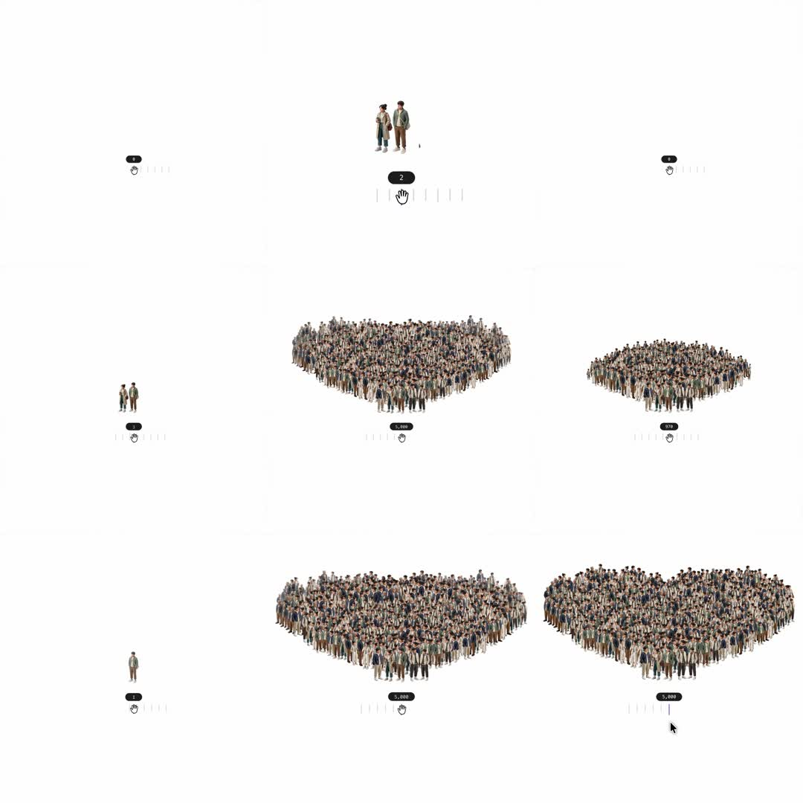

Media
Frame-by-frame

0-10%
Empty canvas, slider at 0, pill counter reads 0-2; one or two people sprites center.
10-25%
Slider ~40%: dense elliptical crowd blob center-canvas, hundreds of distinct figures packed; pill ~2,000.
25-45%
Slider ~70%: crowd wider than tall; pill ~5,000; silhouette still a rounded mass.
45-75%
Crowd reorganizes into two distinct lobes, left lobe first.
75-95%
Twin-lobe heart/clover silhouette fully formed and packed; pill 5,000+.
95-100%
Slider releases back toward 0; crowd thins to one figure; loop.